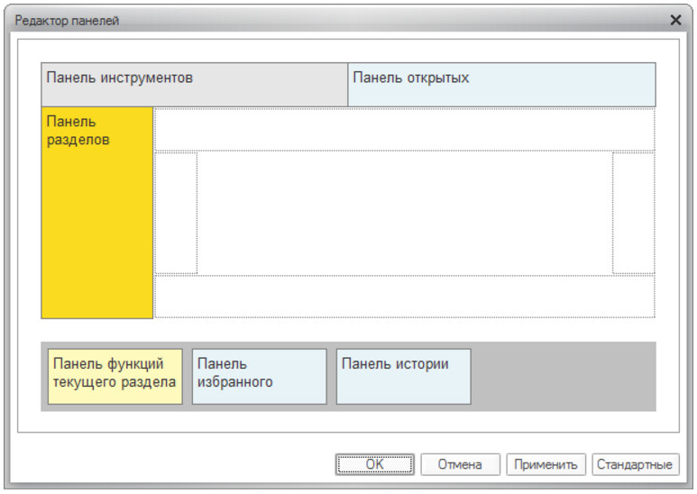
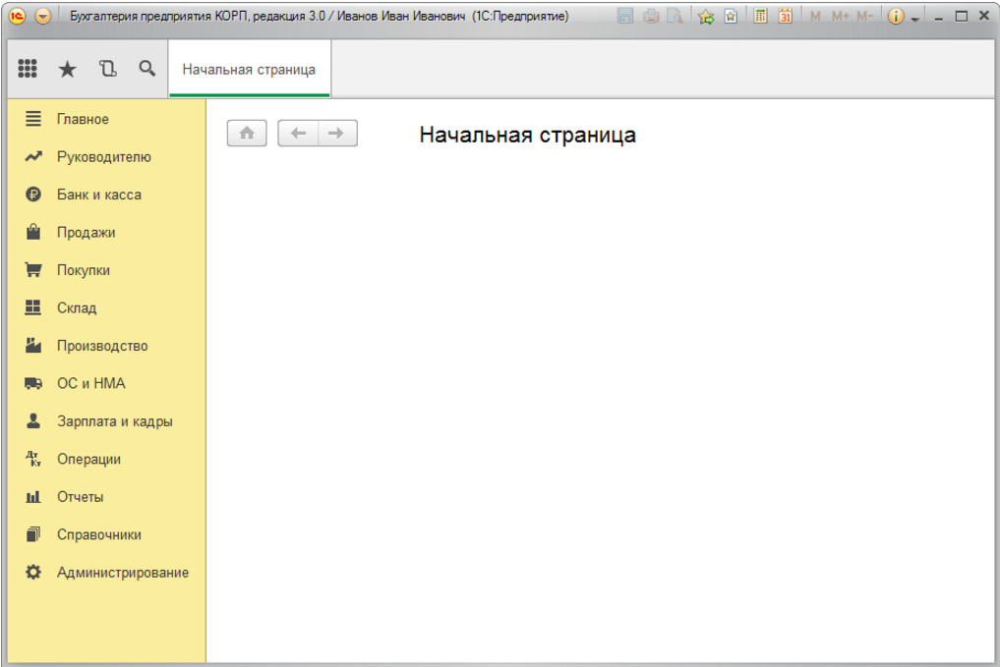

Как вместить большое количество команд
Область применения: управляемое приложение.
В конфигурациях со сложной структурой меню и большим количеством команд рекомендуется:
1. Панель разделов размещать вертикально, в левой части окна
2. Заголовки разделов выводить в виде "Картинка и текст", использовать картинки размером 16х16
3. Панель инструментов и панель открытых выводить сверху
4. Панель функций текущего раздела не отображать. Навигация внутри раздела будет осуществляться с помощью Меню функций

